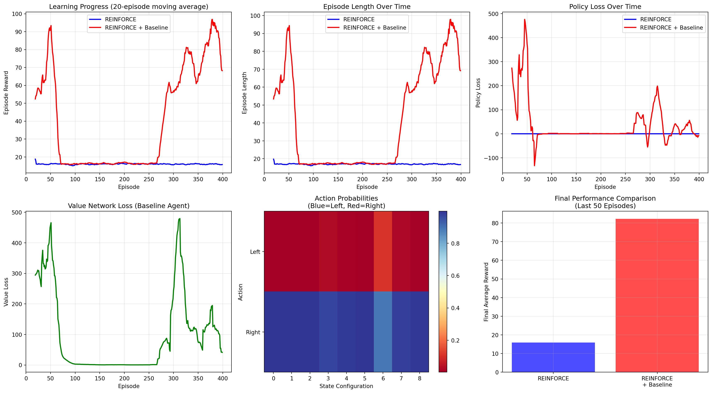

import numpy as np
import matplotlib.pyplot as plt
import torch
import torch.nn as nn
import torch.optim as optim
from collections import deque
import random
# Simple CartPole-like environment
class SimpleCartPole:
def __init__(self):
self.reset()
self.max_steps = 200
def reset(self):
self.state = np.random.uniform(-0.1, 0.1, 4) # [position, velocity, angle, angular_velocity]
self.steps = 0
return self.state
def step(self, action):
# Simple physics simulation
force = 10.0 if action == 1 else -10.0
# Update state (simplified dynamics)
x, x_dot, theta, theta_dot = self.state
# Angular acceleration
theta_ddot = (9.8 * np.sin(theta) + np.cos(theta) * (-force - 0.1 * theta_dot**2 * np.sin(theta))) / (4.0/3.0 - 0.1 * np.cos(theta)**2)
# Linear acceleration
x_ddot = (force + 0.1 * (theta_dot**2 * np.sin(theta) - theta_ddot * np.cos(theta))) / 1.1
# Update velocities and positions
dt = 0.02
x_dot += x_ddot * dt
x += x_dot * dt
theta_dot += theta_ddot * dt
theta += theta_dot * dt
self.state = np.array([x, x_dot, theta, theta_dot])
self.steps += 1
# Check if episode is done
done = (abs(x) > 2.4 or abs(theta) > 0.5 or self.steps >= self.max_steps)
# Reward: +1 for each step the pole stays upright
reward = 1.0 if not done else 0.0
return self.state, reward, done
class PolicyNetwork(nn.Module):
def __init__(self, state_size, action_size, hidden_size=128):
super().__init__()
self.network = nn.Sequential(
nn.Linear(state_size, hidden_size),
nn.ReLU(),
nn.Linear(hidden_size, hidden_size),
nn.ReLU(),
nn.Linear(hidden_size, action_size),
nn.Softmax(dim=-1)
)
def forward(self, state):
return self.network(state)
class REINFORCE:
def __init__(self, state_size, action_size, lr=0.001):
self.policy = PolicyNetwork(state_size, action_size)
self.optimizer = optim.Adam(self.policy.parameters(), lr=lr)
def select_action(self, state):
state = torch.from_numpy(state).float().unsqueeze(0)
probs = self.policy(state)
action_dist = torch.distributions.Categorical(probs)
action = action_dist.sample()
return action.item(), action_dist.log_prob(action)
def update(self, log_probs, rewards, gamma=0.99):
# Calculate returns (discounted cumulative rewards)
returns = []
G = 0
for reward in reversed(rewards):
G = reward + gamma * G
returns.insert(0, G)
# Convert to tensor and normalize
returns = torch.tensor(returns, dtype=torch.float32)
if len(returns) > 1:
returns = (returns - returns.mean()) / (returns.std() + 1e-8)
# Calculate policy loss
policy_loss = []
for log_prob, G in zip(log_probs, returns):
policy_loss.append(-log_prob * G)
# Update policy
self.optimizer.zero_grad()
policy_loss = torch.stack(policy_loss).sum()
policy_loss.backward()
self.optimizer.step()
return policy_loss.item()
class REINFORCEWithBaseline:
def __init__(self, state_size, action_size, lr=0.001):
self.policy = PolicyNetwork(state_size, action_size)
self.value_net = nn.Sequential(
nn.Linear(state_size, 128),
nn.ReLU(),
nn.Linear(128, 128),
nn.ReLU(),
nn.Linear(128, 1)
)
self.policy_optimizer = optim.Adam(self.policy.parameters(), lr=lr)
self.value_optimizer = optim.Adam(self.value_net.parameters(), lr=lr)
def select_action(self, state):
state = torch.from_numpy(state).float().unsqueeze(0)
probs = self.policy(state)
action_dist = torch.distributions.Categorical(probs)
action = action_dist.sample()
return action.item(), action_dist.log_prob(action)
def update(self, states, log_probs, rewards, gamma=0.99):
# Calculate returns
returns = []
G = 0
for reward in reversed(rewards):
G = reward + gamma * G
returns.insert(0, G)
states = torch.tensor(np.array(states), dtype=torch.float32)
returns = torch.tensor(returns, dtype=torch.float32)
# Get value estimates
values = self.value_net(states).squeeze()
# Calculate advantages
advantages = returns - values
# Update value network
value_loss = nn.MSELoss()(values, returns)
self.value_optimizer.zero_grad()
value_loss.backward()
self.value_optimizer.step()
# Update policy network
policy_loss = []
for log_prob, advantage in zip(log_probs, advantages.detach()):
policy_loss.append(-log_prob * advantage)
self.policy_optimizer.zero_grad()
policy_loss = torch.stack(policy_loss).sum()
policy_loss.backward()
self.policy_optimizer.step()
return policy_loss.item(), value_loss.item()
def train_reinforce(agent_type='vanilla', num_episodes=500):
env = SimpleCartPole()
if agent_type == 'vanilla':
agent = REINFORCE(state_size=4, action_size=2, lr=0.01)
else:
agent = REINFORCEWithBaseline(state_size=4, action_size=2, lr=0.01)
episode_rewards = []
episode_lengths = []
policy_losses = []
value_losses = []
for episode in range(num_episodes):
state = env.reset()
log_probs = []
rewards = []
states = []
while True:
action, log_prob = agent.select_action(state)
next_state, reward, done = env.step(action)
log_probs.append(log_prob)
rewards.append(reward)
states.append(state)
state = next_state
if done:
break
# Update agent
if agent_type == 'vanilla':
policy_loss = agent.update(log_probs, rewards)
policy_losses.append(policy_loss)
value_losses.append(0) # No value network
else:
policy_loss, value_loss = agent.update(states, log_probs, rewards)
policy_losses.append(policy_loss)
value_losses.append(value_loss)
episode_rewards.append(sum(rewards))
episode_lengths.append(len(rewards))
if episode % 100 == 0:
avg_reward = np.mean(episode_rewards[-100:])
print(f"Episode {episode}, Average Reward: {avg_reward:.2f}")
return episode_rewards, episode_lengths, policy_losses, value_losses
# Train both variants
print("Training REINFORCE (vanilla)...")
vanilla_rewards, vanilla_lengths, vanilla_p_losses, _ = train_reinforce('vanilla', 400)
print("\nTraining REINFORCE with Baseline...")
baseline_rewards, baseline_lengths, baseline_p_losses, baseline_v_losses = train_reinforce('baseline', 400)
# Create comprehensive visualizations
fig, axes = plt.subplots(2, 3, figsize=(18, 10))
# Learning curves
window = 20
vanilla_smooth = np.convolve(vanilla_rewards, np.ones(window)/window, mode='valid')
baseline_smooth = np.convolve(baseline_rewards, np.ones(window)/window, mode='valid')
axes[0, 0].plot(range(window-1, len(vanilla_rewards)), vanilla_smooth,
label='REINFORCE', linewidth=2, color='blue')
axes[0, 0].plot(range(window-1, len(baseline_rewards)), baseline_smooth,
label='REINFORCE + Baseline', linewidth=2, color='red')
axes[0, 0].set_xlabel('Episode')
axes[0, 0].set_ylabel('Episode Reward')
axes[0, 0].set_title('Learning Progress (20-episode moving average)')
axes[0, 0].legend()
axes[0, 0].grid(True, alpha=0.3)
# Episode lengths
vanilla_length_smooth = np.convolve(vanilla_lengths, np.ones(window)/window, mode='valid')
baseline_length_smooth = np.convolve(baseline_lengths, np.ones(window)/window, mode='valid')
axes[0, 1].plot(range(window-1, len(vanilla_lengths)), vanilla_length_smooth,
label='REINFORCE', linewidth=2, color='blue')
axes[0, 1].plot(range(window-1, len(baseline_lengths)), baseline_length_smooth,
label='REINFORCE + Baseline', linewidth=2, color='red')
axes[0, 1].set_xlabel('Episode')
axes[0, 1].set_ylabel('Episode Length')
axes[0, 1].set_title('Episode Length Over Time')
axes[0, 1].legend()
axes[0, 1].grid(True, alpha=0.3)
# Policy losses
vanilla_p_smooth = np.convolve(vanilla_p_losses, np.ones(window)/window, mode='valid')
baseline_p_smooth = np.convolve(baseline_p_losses, np.ones(window)/window, mode='valid')
axes[0, 2].plot(range(window-1, len(vanilla_p_losses)), vanilla_p_smooth,
label='REINFORCE', linewidth=2, color='blue')
axes[0, 2].plot(range(window-1, len(baseline_p_losses)), baseline_p_smooth,
label='REINFORCE + Baseline', linewidth=2, color='red')
axes[0, 2].set_xlabel('Episode')
axes[0, 2].set_ylabel('Policy Loss')
axes[0, 2].set_title('Policy Loss Over Time')
axes[0, 2].legend()
axes[0, 2].grid(True, alpha=0.3)
# Value loss for baseline agent
baseline_v_smooth = np.convolve(baseline_v_losses, np.ones(window)/window, mode='valid')
axes[1, 0].plot(range(window-1, len(baseline_v_losses)), baseline_v_smooth,
linewidth=2, color='green')
axes[1, 0].set_xlabel('Episode')
axes[1, 0].set_ylabel('Value Loss')
axes[1, 0].set_title('Value Network Loss (Baseline Agent)')
axes[1, 0].grid(True, alpha=0.3)
# Policy visualization - show action probabilities over different states
def visualize_policy(agent, title):
test_states = []
for pos in [-1, 0, 1]:
for angle in [-0.2, 0, 0.2]:
test_states.append([pos, 0, angle, 0]) # position, velocity, angle, angular_velocity
test_states = np.array(test_states)
with torch.no_grad():
state_tensor = torch.tensor(test_states, dtype=torch.float32)
if hasattr(agent, 'policy'):
action_probs = agent.policy(state_tensor).numpy()
else:
action_probs = agent.policy(state_tensor).numpy()
return action_probs
# Create a trained baseline agent for visualization
env = SimpleCartPole()
vis_agent = REINFORCEWithBaseline(state_size=4, action_size=2, lr=0.01)
# Train briefly for visualization
for _ in range(100):
state = env.reset()
log_probs, rewards, states = [], [], []
while True:
action, log_prob = vis_agent.select_action(state)
next_state, reward, done = env.step(action)
log_probs.append(log_prob)
rewards.append(reward)
states.append(state)
state = next_state
if done:
break
vis_agent.update(states, log_probs, rewards)
# Visualize learned policy
action_probs = visualize_policy(vis_agent, 'Trained Policy')
im = axes[1, 1].imshow(action_probs.T, cmap='RdYlBu', aspect='auto')
axes[1, 1].set_title('Action Probabilities\n(Blue=Left, Red=Right)')
axes[1, 1].set_xlabel('State Configuration')
axes[1, 1].set_ylabel('Action')
axes[1, 1].set_yticks([0, 1])
axes[1, 1].set_yticklabels(['Left', 'Right'])
plt.colorbar(im, ax=axes[1, 1])
# Performance comparison
final_vanilla = np.mean(vanilla_rewards[-50:])
final_baseline = np.mean(baseline_rewards[-50:])
axes[1, 2].bar(['REINFORCE', 'REINFORCE\n+ Baseline'], [final_vanilla, final_baseline],
color=['blue', 'red'], alpha=0.7)
axes[1, 2].set_ylabel('Final Average Reward')
axes[1, 2].set_title('Final Performance Comparison\n(Last 50 Episodes)')
axes[1, 2].grid(True, alpha=0.3)
plt.tight_layout()
plt.show()
print(f"\nFinal Performance Summary:")
print(f"REINFORCE (vanilla): {final_vanilla:.2f}")
print(f"REINFORCE + Baseline: {final_baseline:.2f}")
print(f"Improvement with baseline: {((final_baseline - final_vanilla) / final_vanilla * 100):.1f}%")
print(f"\nKey Insights:")
print(f"• Baseline reduces variance and improves learning stability")
print(f"• Policy gradients learn stochastic policies directly")
print(f"• Higher rewards lead to increased action probabilities")
print(f"• Variance reduction is crucial for policy gradient methods")Training REINFORCE (vanilla)...
Episode 0, Average Reward: 43.00
Episode 100, Average Reward: 18.82
Episode 200, Average Reward: 15.98
Episode 300, Average Reward: 16.08
Training REINFORCE with Baseline...
Episode 0, Average Reward: 41.00
Episode 100, Average Reward: 96.43
Episode 200, Average Reward: 102.32
Episode 300, Average Reward: 102.84
Final Performance Summary:
REINFORCE (vanilla): 16.16
REINFORCE + Baseline: 118.60
Improvement with baseline: 633.9%
Key Insights:
• Baseline reduces variance and improves learning stability
• Policy gradients learn stochastic policies directly
• Higher rewards lead to increased action probabilities
• Variance reduction is crucial for policy gradient methods